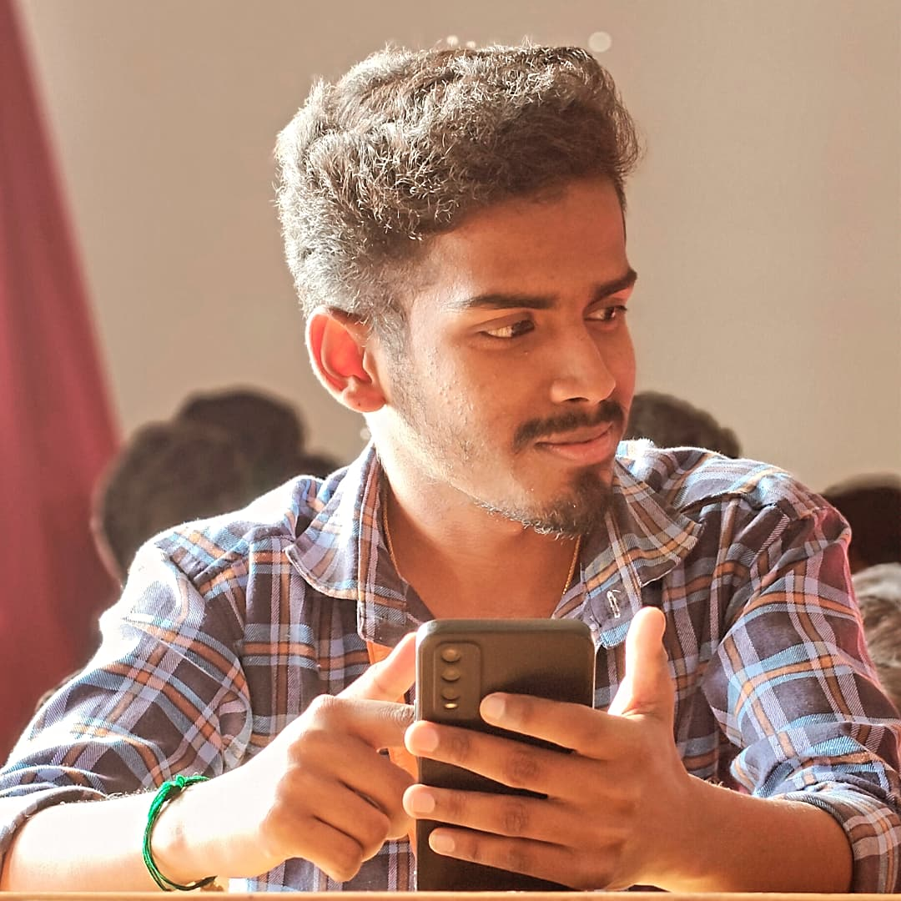

Prabakaran S holds a Bachelor's degree in Biomedical Engineering from Kongunadu College of Engineering and Technology, Tamil Nadu. With a strong foundation in biomedical systems and a commitment to innovation, he has developed multiple academic projects, including a Heart Attack Detection System, a Paralysis Care System, and a Wearable Bio-Monitoring System. His practical knowledge is further enriched by internships at MEDVU, Retna Global Health Hospital, and Kabila Hospital, where he worked closely with biomedical devices and healthcare technologies.
Beyond academics, he has actively participated in technical workshops, seminars, and paper presentations. He has received certifications in Arduino programming, electronic design, and medical coding. His core interests lie in biomedical instrumentation and physiotherapy technologies. Prabakaran is known for his compassion, excellent communication skills, and a strong desire to learn. He is dedicated to advancing healthcare through innovative engineering solutions and collaborative development.
"Success is not the key to happiness. Happiness is the key to success. If you love what you are doing, you will be successful."
You can reach me through the following links: